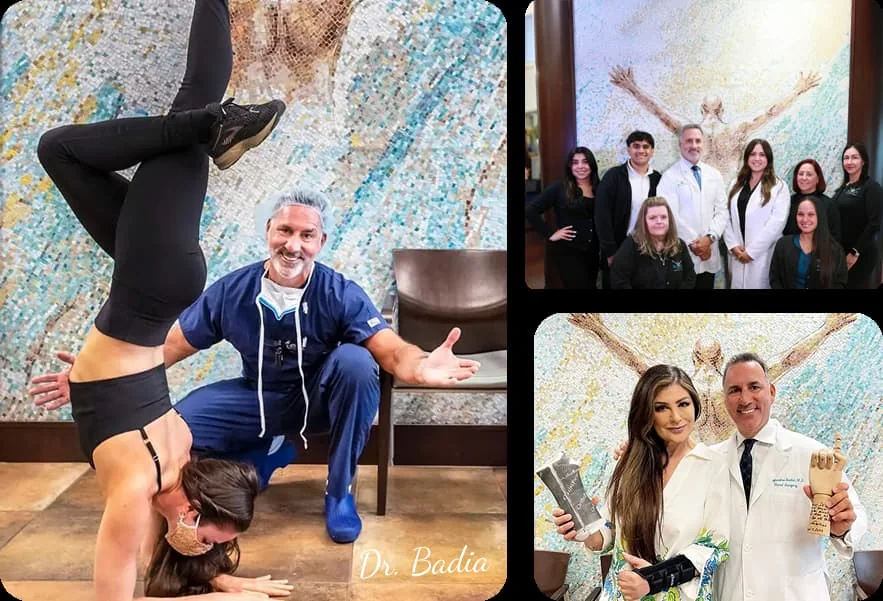

HomePatient stories
Ask the people who had it done.
Dr. Badia films his patients before and after surgery, often days after the operation, many of them in Spanish. Thirty of those stories are here, with hundreds more on his YouTube channel.

30 stories, filmed by Dr. BadiaMarcelo Ríos, former world No. 1, on his elbows
A professional tennis player after four failed procedures
Olympic swimmer Shaune Fraser
A bodybuilder, ready to train after biceps reconstruction
Tenex for tennis elbow, results at 2.5 weeks
A retired orthopedic surgeon, 7 days after BioPro
One week after BioPro thumb replacement
“Bionic thumb?” Four-week follow-up
Back for the second thumb
Offered LRTI in Georgia, chose a joint replacement
Two surgeries without improvement, until Miami
Misdiagnosed wrist pain after a fall at work
The injury urgent care often calls a sprain
A pilot from Ecuador, eight years after wrist fusion
An equestrian from Guayaquil with a scapholunate tear
An OB-GYN from Barbados after carpal tunnel release
Six hand surgeries in one day
Hand numbness solved without the operating room
A patient awake during surgery
Awake endoscopic carpal tunnel release
Awake for wrist arthroscopy, a patient from Ukraine
Virtual reality instead of sedation
Why a patient flew from Ecuador for a Latarjet
Leona’s shoulder: from 10/10 pain to pain-free
Rotator cuff recovery in under four months
Outpatient total shoulder replacement
Shoulder surgery, from the Cayman Islands
Video follow-up after a massive rotator cuff repair
Pediatric elbow reconstruction, eight years on
Your story starts with a visit.
In person in Doral, by video from anywhere, or on a New York procedure day.